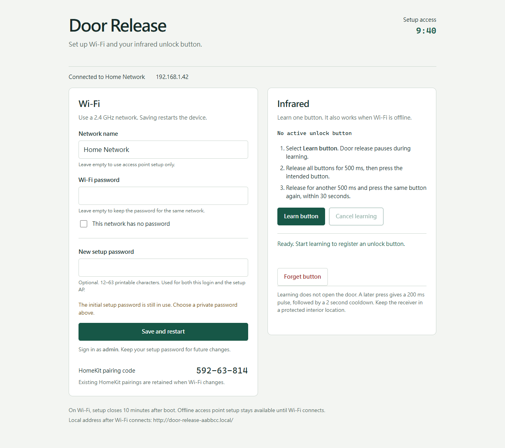
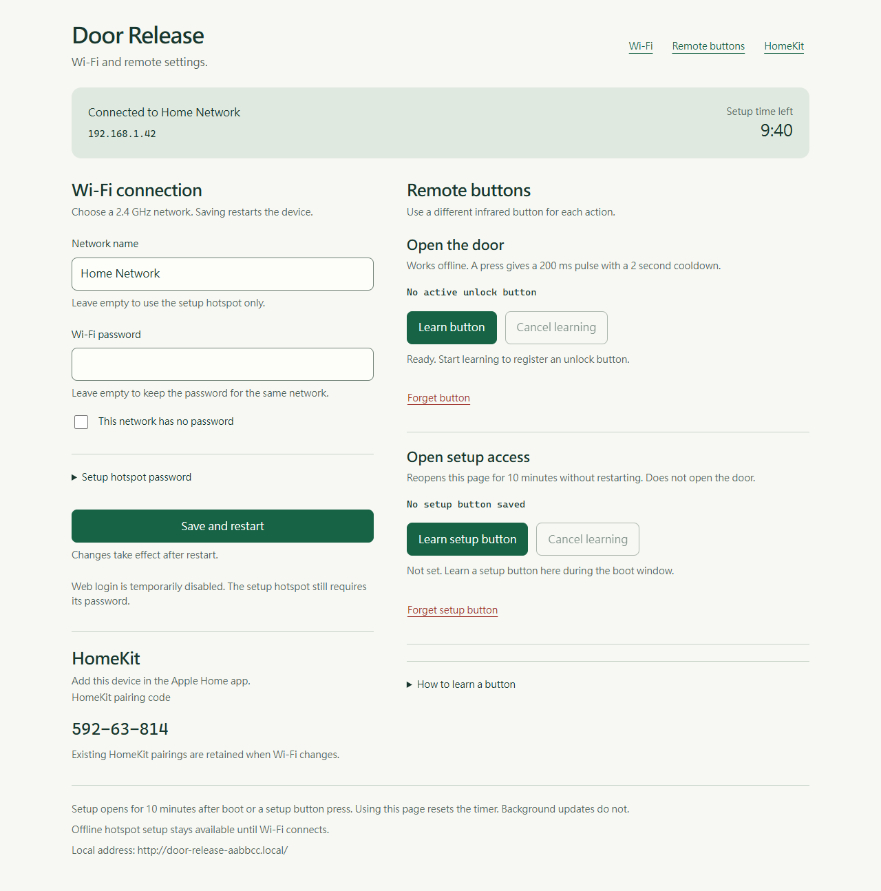
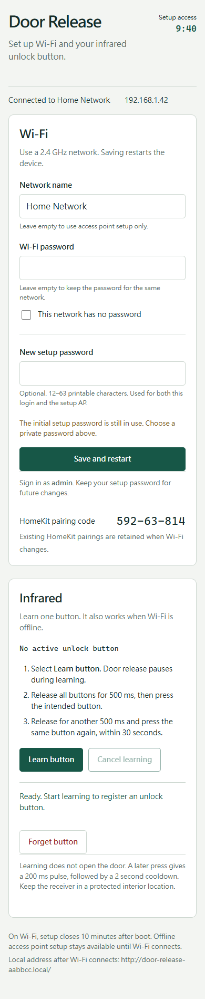
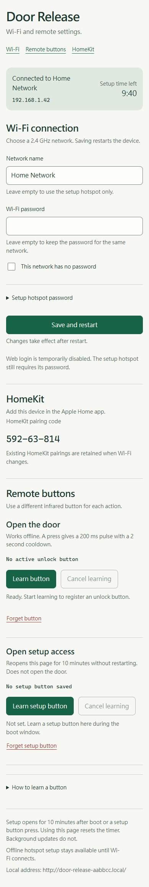

OpenLatch: before and after
English settings, separate remote buttons and a setup window renewed by user activity.
Desktop


Mobile


English settings, separate remote buttons and a setup window renewed by user activity.



